Lumiere

This is a 10-week capstone project, and we’ve partnered with a Senior UX Researcher from Microsoft Internet of Things design research team and the heads of the retail practice at Point B to use design and technology to rethink the in-store experience.
Particularly, our team is passionate about how design can be used to shape the food and cooking culture. We identified a unique opportunity to build on the Sur La Table mission, and improve their in-store experience by introducing a meaningful use of technology to help them connect the dots in their omni-channel strategy.
Concept Video
Design Process
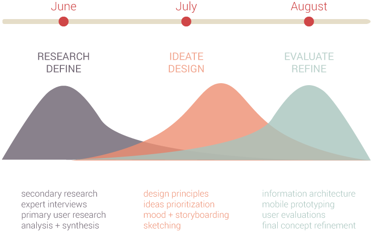
Generative Research
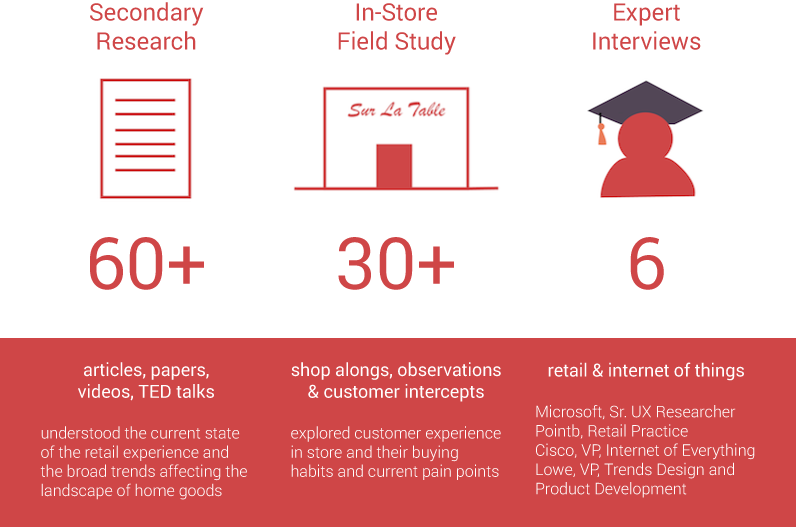
Research Synthesis
We used several frameworks to synthesize our secondary research in different perspectives and also created competitive landscape to help us analyze current cookware retail industry competitors. We utilized affinity diagram to analyze quantitative data from observations and customer intercepts, and created a customer journey map that outlines the phases of a typical shopping experience, from when customer first start thinking about purchasing to after they've taken at home and are using it.
Customer Journey Map
We identified areas of opportunity at two specific points:
Design Question
How can we improve the in store experience to help shoppers discover new products and realize projects at home?
Audience
Existing Sur la Table customers who browse stores for inspiration, seek new ways to up their cooking game.
Ecosystem Diagram
We thought about the whole ecosystem to better understand user needs and all the interactions within the cookware retail space.
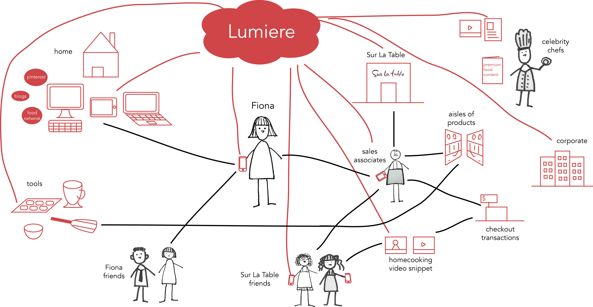
Ideation and Design
We engaged in traditional activities such as brainstorming and grouping our ideas in an affinity diagram to see patterns. Additional techniques and frameworks that helped us arrive at our top ideas included considering, “what if we could make the retail experience more like ___________”. Then we evaluated ideas based on the design principles informed by our research. Scoping down to 2-3 ideas, we got back into stores to get practical insights into how our designs might be realized in the physical space.
Design Principles
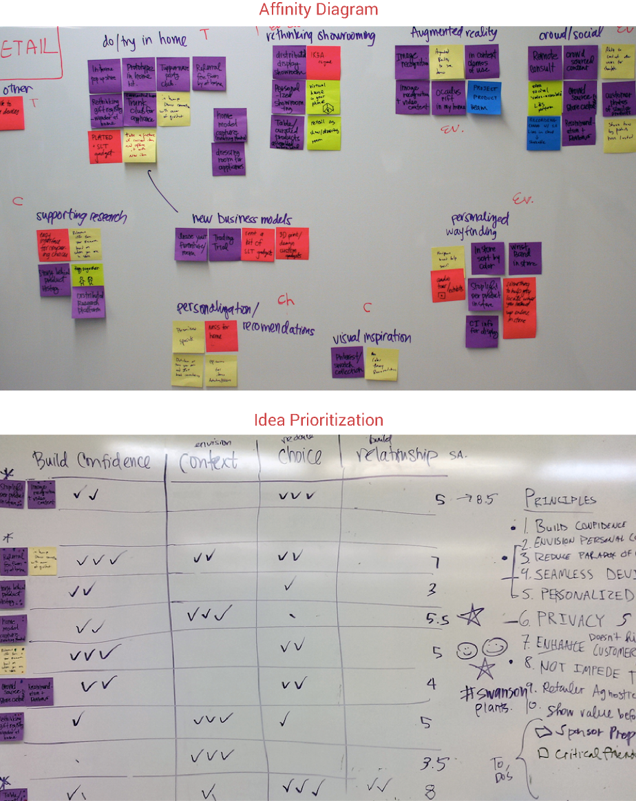
We started to create storyboard, and then sketched out detailed concepts. Some of my storyboards and sketches are in the following. I wireframed quickly and very low fidelity to explore different functionalities and interactions based on our design principles.
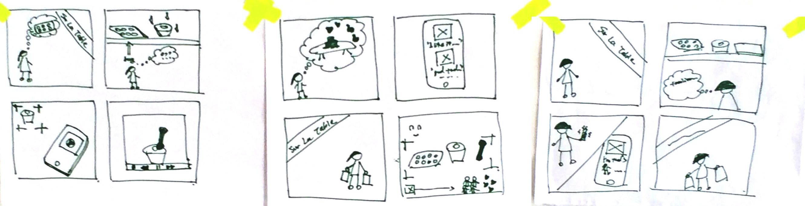
Information Architecture
We created a high level information architecture to guide our wireframing and paper prototyping.
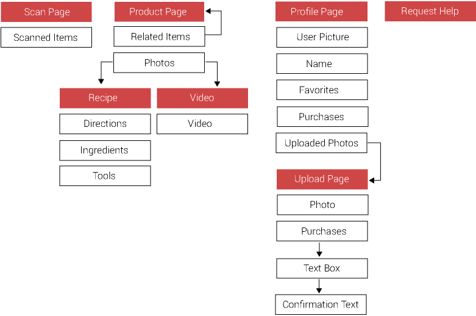
Mid-Fidelity Mockups
After defining the information and functionalities, each of us explored different interactions and user interface first, and then evaluated them as a group. We also tried to add visual design to see if the content works. My selected mockups are as follows.
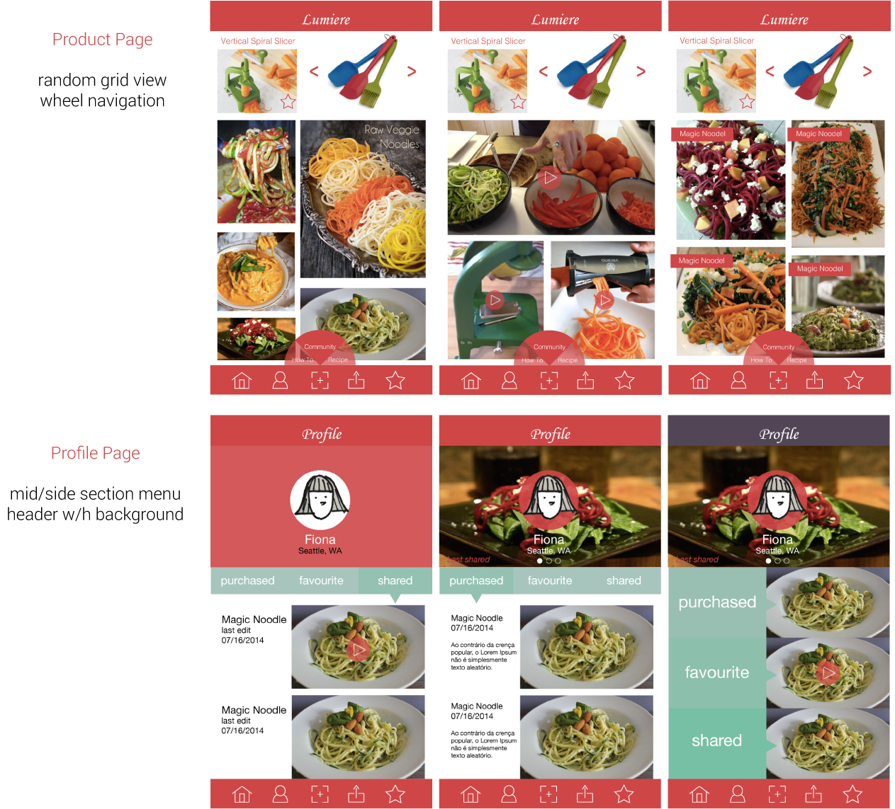
Evaluation and Refinement
After multiple iterations of low-fidelity paper prototypes, we moved directly to building a high fidelity interactive mobile prototype using Proto.io. Then, We took an iterative approach to our prototype evaluation and refinement. Firstly, we conducted an expert review with Alexander, Sr. UX Researcher from Microsoft. We then ealuated two users per round and iterating our designs between each round of evaluations. We triangulated our evaluation methods in order to capture both what our users were saying and doing, as well as both quantitative and quantitative measures.
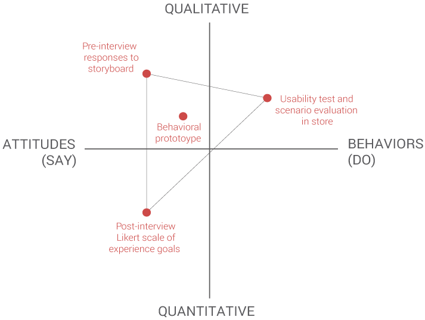
Iteration 1 -- Expert Review
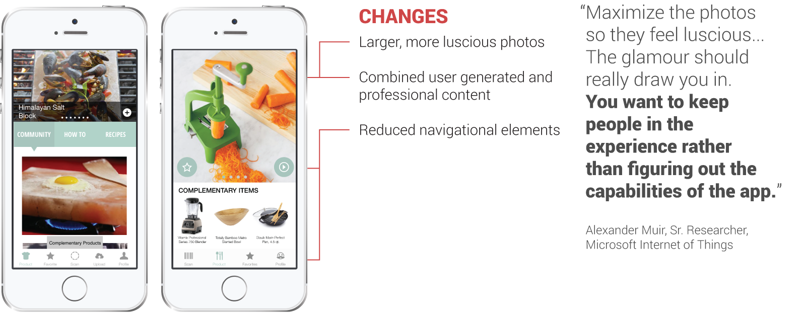
Iteration 2 -- In-Store Evaluation
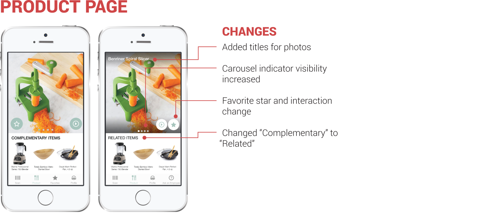
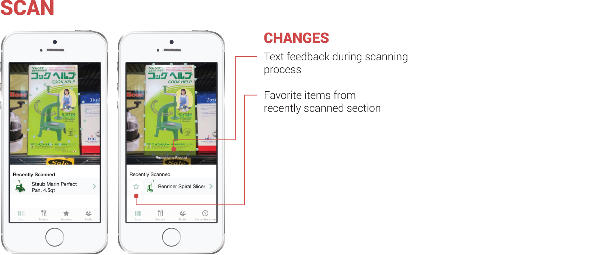
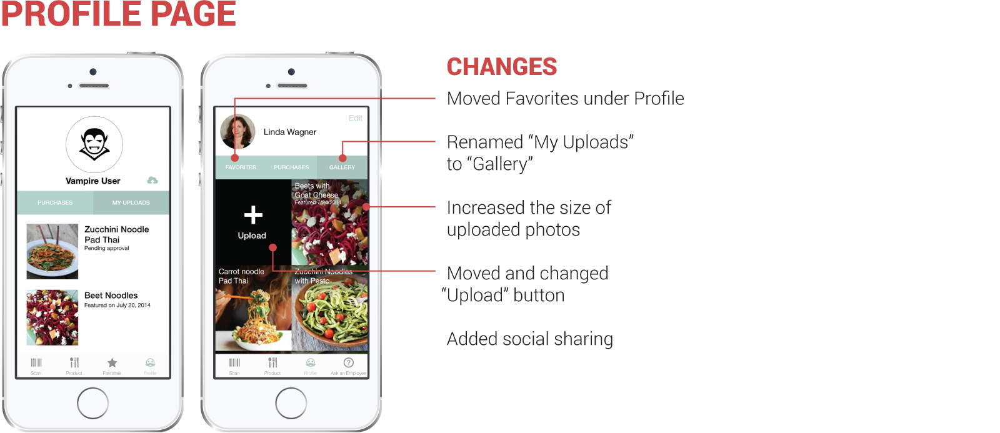
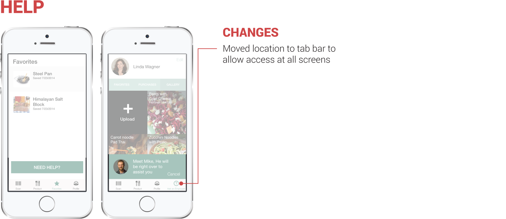
Final Design
Lumèire, a Sur La Table product companion app that inspires shoppers to up their cooking game by discovering tools that help them embark on new culinary endeavors.
Lumèire leverages the unique in-store bazaar-like experience to promote discovery and helps Sur La Table turn foodies' obsession with tools into moments of inspiration and opportunity for education on tools and techniques. Inspiration and execution are brought together through curated photos and recipes in a single mobile application which is equally useful in store and at home.
Lumiere Service Blueprint
The service blueprint provides a snapshot of the crucial touch points Lumière has with customers and Sur La Table’s existing service system. Our biggest takeaway is that we must account for the supporting infrastructure of our system, and think through the necessary resource tradeoffs and opportunities to create value in the larger system.
Competitive Opportunity
Many of Sur La Table’s current touch points in the customer journey have addressed awareness, consideration, and perception out of the store. However, we feel there is a particular opportunity to fill the gap in the areas of in-store perception and the use phase, which follows purchase.
Business Benefits
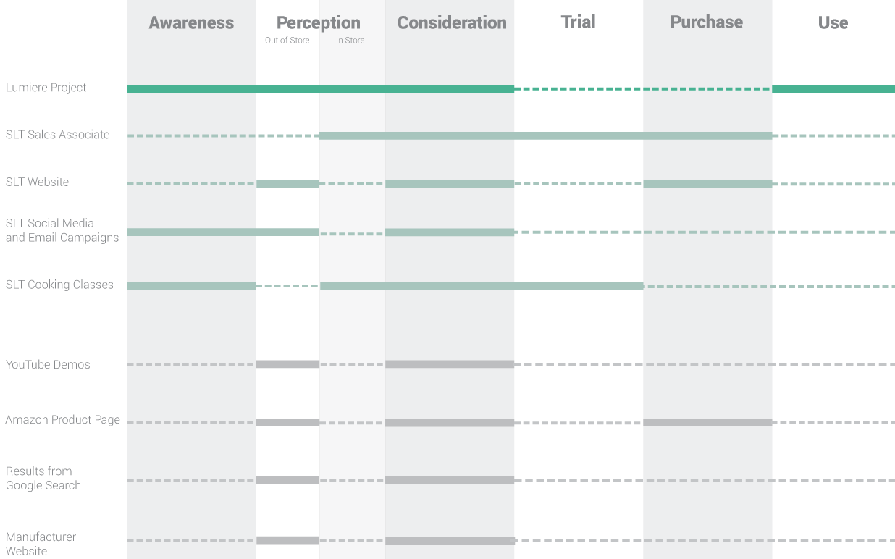
Lumiere Application
Click me and try our high-fidelity prototype (please zoom out your window to 50% for better experience) !
Design Decisions
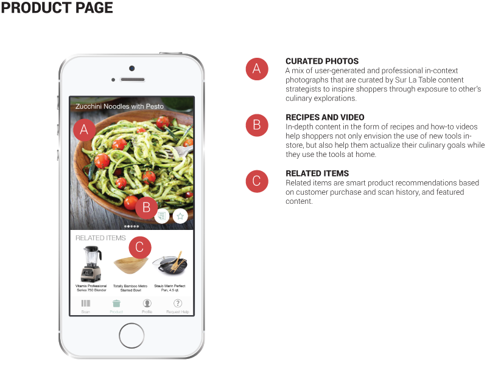
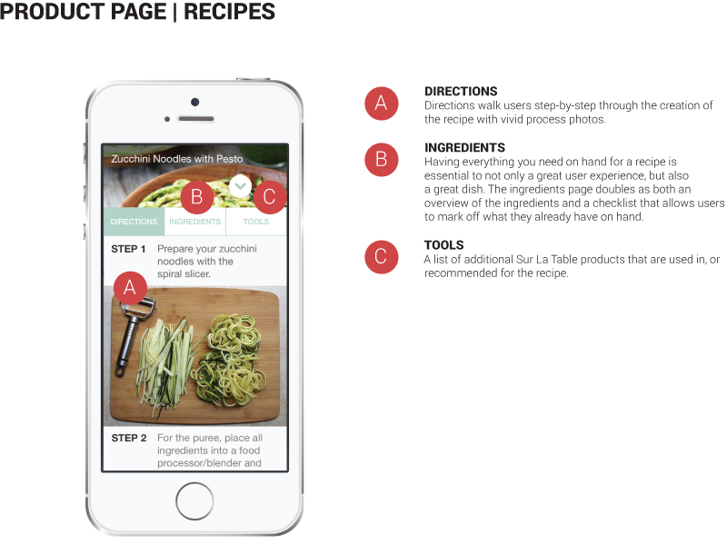
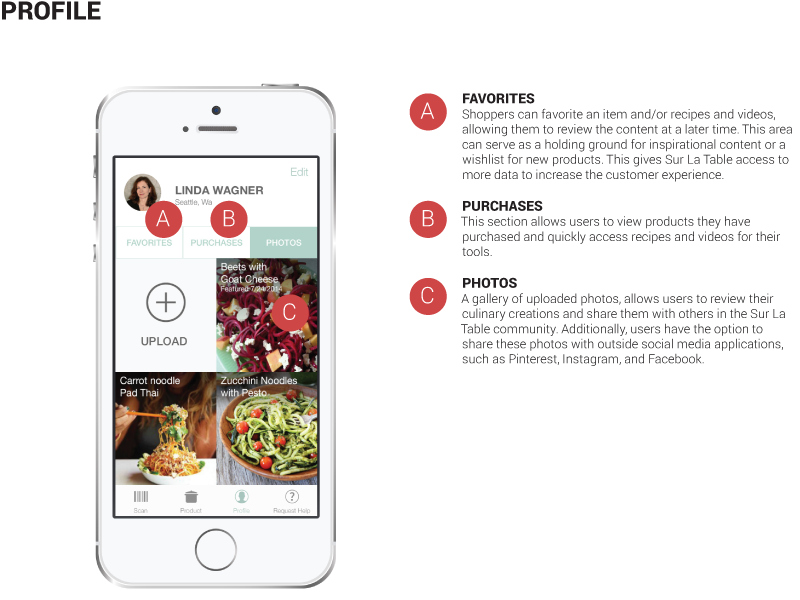
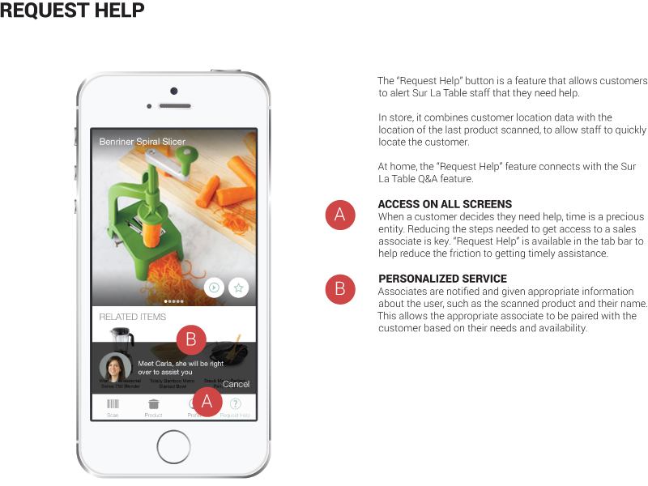
Other design work I did
I created a moodboard to find inspirations for our visual design.
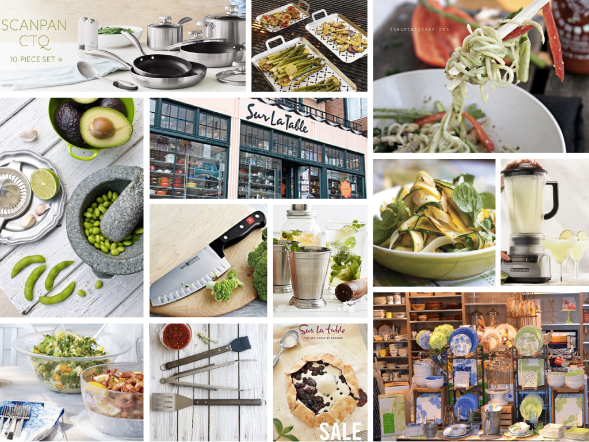
I also involved into the process book design (showing one version below :-).
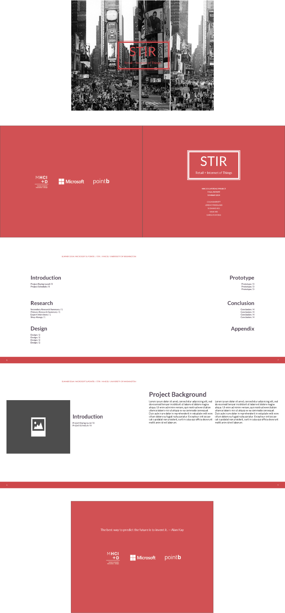